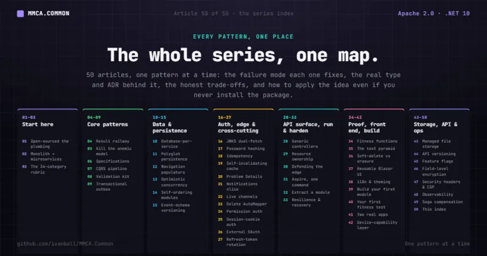

Proof & getting started · No. 53
The MMCA series: every pattern, one place

A single map of the whole series. Start at the top if MMCA.Common is new to you, or jump straight to the pattern you came for.
MMCA.Common is an Apache-2.0 licensed .NET 10 framework that gives you DDD, Clean Architecture, and CQRS as a modular monolith that extracts to microservices without a rewrite, and it grades itself against a 34-category architecture rubric in the open. This series teaches it one pattern at a time: the failure mode each pattern fixes, the real type and ADR behind the MMCA.Common implementation, the honest trade-offs, and how to apply the idea even if you never install the package.
Each article stands on its own if you land on it from a search. This page is the index that ties them together: 52 deep-dives plus this map, 53 articles in all. The groups below run roughly from "why this exists" to "how to build with it," so reading top to bottom is a reasonable curriculum, but every link is also a fine place to start.
Start here
The thesis and the framing. Read these first if you have not met the framework.
- 01 · I open-sourced the enterprise .NET plumbing I never want to rewrite, and graded it against 34 categories
- 02 · Modular monolith to microservices, without the rewrite
- 03 · What good architecture actually means: a 34-category rubric you can score yourself against
Core patterns
The day-one building blocks. Error handling, the domain model, query intent, the handler pipeline, the reliability backbone that ties them together, the compensating handlers that undo a step no transaction can roll back, and the durable queue that runs an ordinary command later.
- 04 · Stop throwing exceptions for control flow: the Result railway in C#
- 05 · Kill the anemic domain model: rich aggregates with factory methods that return Result
- 06 · Specifications over LINQ spaghetti: composable, reusable query intent
- 07 · The CQRS decorator pipeline: logging, caching, and transactions without touching a handler
- 08 · Compose validators, don't copy them: a reusable FluentValidation kit
- 09 · The transactional outbox in .NET 10: never lose an event again
- 45 · Feature Flags in the CQRS Pipeline: Gate Commands, Not Code
- 49 · Undo Is a Feature: Saga Compensation and the Reconciliation Backstop
- 51 · Four Ways to Do Work Later: Channels, Cron, the Outbox and Durable Internal Commands
Data and persistence
How the data layer is built so a module owns its own database, and even its own storage engine, and can become its own service later without a rewrite.
- 10 · Database-per-service inside a monolith (and why)
- 11 · One entity model, four databases: polyglot persistence behind a single attribute
- 12 · EF Core Include chains are a trap: navigation populators decouple eager loading
- 13 · Optimistic concurrency you cannot opt out of: RowVersion from the database to a required If-Match
- 14 · Self-ordering modules: discovered, Kahn-ordered, and extractable
- 15 · Event-schema versioning: never silently reshape an event
Auth, the API edge, and cross-cutting
The concerns that sit across every module: authentication between services, authorization (by role, by permission, and by row ownership), password storage, safe retries, caching, error contracts, notifications, DTO mapping, browser session auth, the generic REST surface, defending the edge, encrypting PII columns at rest, the hardened response headers every host stamps, and the optional second factor, email-confirmation gate and stored permission grants that complete the identity story.
- 16 · Cross-service auth without a shared secret: JWKS dual-fetch
- 17 · Password hashing done right: PBKDF2-SHA512, 600k iterations, timing-safe
- 18 · Idempotency in one attribute: safe retries for HTTP APIs
- 19 · The self-invalidating cache that lives in the pipeline, not your handlers
- 20 · Problem Details across HTTP and gRPC (RFC 9457)
- 21 · Notifications as a vertical slice: in-app inbox, real-time push, native push, and email
- 22 · Ephemeral by design: sub-second live channels over one SignalR hub
- 23 · Delete AutoMapper: explicit, compile-time DTO mapping that you can actually test
- 24 · Permission-based authorization: capabilities over role checks
- 25 · Browser session-cookie auth for Blazor SSR: surviving the F5
- 26 · Google, GitHub and Apple login without leaking tokens: external OAuth behind your own JWTs
- 27 · Refresh tokens that rotate per device, and reuse detection that makes theft self-limiting
- 28 · Generic entity controllers and the dynamic query contract (ADR-034)
- 29 · Resource-ownership authorization: which rows you may touch, not just which actions
- 30 · Defending the API edge: three controls that cover the whole surface
- 46 · Field-Level Encryption in EF Core: AES-GCM for PII Columns
- 47 · Security Headers and CSP for Blazor: One Middleware, Every Host
- 52 · Finishing Identity: Second Factor, Email Confirmation and Stored Permission Grants
Run, extract, and harden
Bring the whole stack up with one command, then cut a module out into its own service, make the running system survive failure, see what it is doing in production, and put bounds, guardrails and token metering around the model call. Read these in order: Aspire first, then extraction, then resilience, then observability, then the governed LLM boundary.
- 31 · Aspire: one command brings up the whole distributed app
- 32 · Extracting a module to a gRPC service, live
- 33 · Retries are not a recovery plan: resilience handlers, RTO/RPO, and a restore you actually drilled
- 48 · Observability by Default: OpenTelemetry and Azure Monitor in MMCA
- 50 · The LLM Is a Dependency: A Bounded, Guarded, Metered Boundary for Chat Completions
Proof, front end, and getting started
The evidence that the patterns hold (fitness functions, the test pyramid, the erasure pathway), the
reusable Blazor UI framework and the internationalization and theming that ride on it, the hands-on
path from dotnet new mmca-app to your first module, your first fitness test, and the two real apps
that run on all of it, the
device-capability layer that lets one Blazor UI run in a browser and inside a native phone app, and two
later additions that round out the framework surface: managed file storage with untrusted-upload
handling, and provable HTTP API versioning.
- 34 · Architecture fitness functions: rules that fail the build, not a wiki page
- 35 · The test pyramid, not the ice-cream cone: 2,254 fast tests, zero Docker
- 36 · Soft-delete vs the right to erasure: the GDPR conflict and the erasure pathway
- 37 · A list page in a few lines: a reusable Blazor UI framework with the same discipline as the backend
- 38 · One preference, two switches: shipping i18n and dark mode on a single cookie-and-profile pipeline
- 39 · Scaffold a .NET modular monolith in one command, then build your first module
- 40 · Write your first architecture fitness test
- 41 · Two real apps on one framework: a conference platform and a store
- 42 · One Blazor UI, two hosts: a device-capability layer that stays resolvable everywhere
- 43 · Managed file storage: uploads you don't have to trust
- 44 · HTTP API versioning, proven not just claimed
Where to go next
If you are evaluating the framework, read 01 then 03 then 41: the thesis, the rubric, and the proof. If you are here to solve a specific problem, the core-patterns and cross-cutting groups are the toolbox. If you want to build, start at 39: it scaffolds the whole solution in one command, then explains what you were handed. Then 40, to make the conventions fail the build.
Previous: Article 52, "Finishing Identity: Second Factor, Email Confirmation and Stored Permission Grants." This index is article 53 of 53, the last one in the series, so it has no next.
MMCA.Common is Apache-2.0 licensed and open source. Star the repo, read the scorecard (the gaps are the honest
part), or dotnet add package MMCA.Common.API and tell me what breaks. New patterns land regularly,
then monthly evergreen.
- Repo: https://github.com/ivanball/MMCA.Common
- The 34-category scorecard and the ADRs are committed in the docs site.
Tags: .NET, Software Architecture, C Sharp, Microservices, Programming